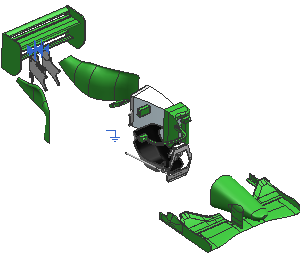

应用邻近度检查
-
右击距离在 5.0 英寸范围内的...并选择组件→显示与隐藏→隐藏。
所有距离 des20_f1_duct_right 5英寸范围内的组件都从图形窗口中隐藏了。

-
使用装配导航器来查看装配结构。
所有隐藏的组件在组件节点旁边都有一个灰色的复选框标记，如果您想让一个组件显示，选择组件节点复选框。
-
右击距离在 5.0 英寸范围内的...并选择组件→显示与隐藏→仅显示。
在5英寸范围内的组件在将图形窗口上显示。

-
关闭所有部件。